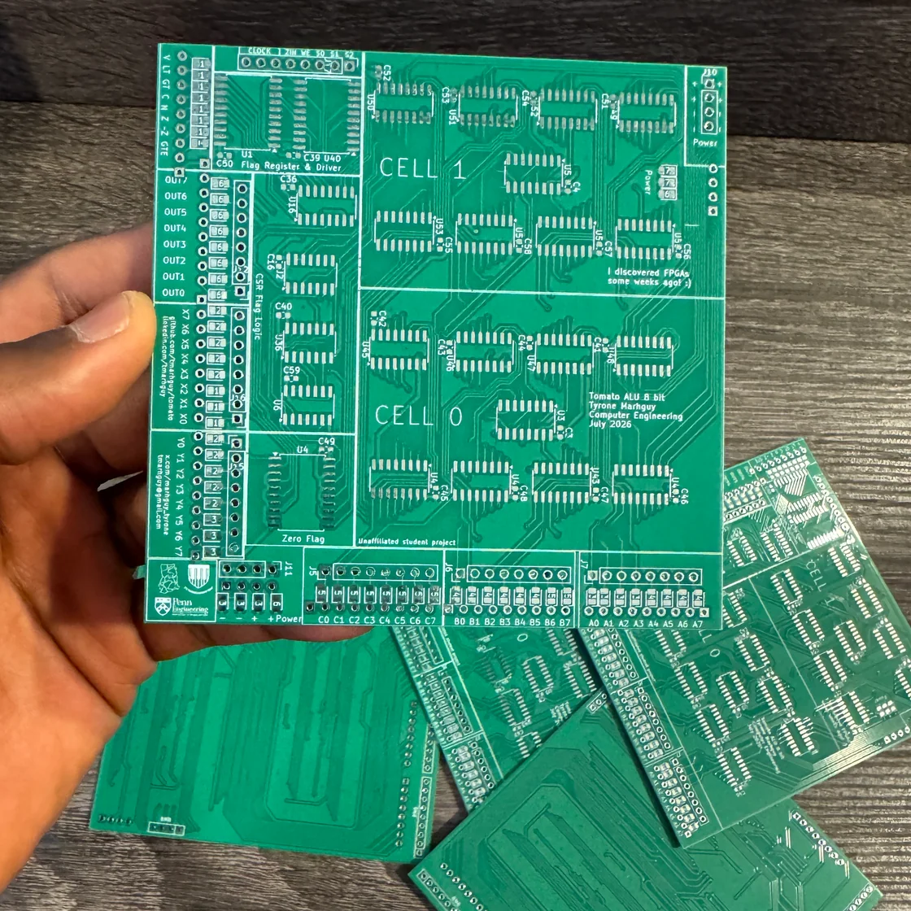

The paper
Web optimization
Vanilla is true. 1.8 MB, GPU instancing, TBT zero, Lighthouse 98 — those were not. Here is the file on disk.
The paper stayed vanilla: static HTML, one magazine stylesheet, Three.js 0.169.0 on an import map. No React, no bundler. That part of the earlier note is true. Almost every number under it was not.
The raw KiCad export is still a monster. What ships is a Draco file that scripts/optimize-pcb.mjs wrote on 15 August, from a KiCad 10.0.4 source tagged alu2.glb. This page is the file on disk, not the story I wanted.
| Before (raw KiCad in the tab) | After (what alu.glb is) |
|
|---|---|---|
| GLB | ~31 MB | 1,255,028 bytes (1.26 MB) |
| Meshes | ~41k pad/trace primitives | 9 meshes, 13 primitives, 13 materials |
| Compression | none | KHR_draco_mesh_compression |
| GPU instancing | no | no — join() by material |
| Copper vs mask | palette() welded both opaque | separate copper, pad, silk, mask, FR4 |
| Client merge | walked every mesh on the main thread | still in pcb-look.js; skips if meshes < 32 |
| Stack | import map, demand-render | same · pixel ratio cap 1.5 |
That is the table. Not 31 → 1.8. Not “ripped the merger out.” Not “native GPU instancing.”
The GLB, without the fable
optimize-pcb.mjs does dedup → join(keepMeshes) → flatten → join → weld → prune → sparse → draco. It does not call palette() or simplify(). Palette was the previous pipeline’s bug: one atlas, then join(), copper gone under an opaque mask. Draco plus per-layer materials is how the file got small and still shows traces.
loadFittedPcb() in pcb-look.js is the one load path: Draco decode, dress materials, seat the board on y = 0. The bench and the full-screen viewer both call it. The merger is a guard for a raw 41k export, not a step we run on the file in the repo.
Look on the board: soldermask #1a9a48 at opacity 0.86, clearcoat 1, FR4 #0c3320, copper #c4a020. Hemisphere key is 0.6, not 2.5. Mask opacity is not 0.48 — that would have been a different (worse) board.
Lighthouse, without the 98
web/tests/lighthouse_desktop.json is a desktop run of index.html on localhost at 16 August 03:25Z. Chrome extensions were on. Scores from that file:
| Category | Score |
|---|---|
| Performance | 43 |
| Accessibility | 100 |
| Best practices | 96 |
| SEO | 100 |
Same run: FCP 0.9 s, Speed Index 1.2 s, CLS 0.046, TBT 3,130 ms, LCP 10.8 s, TTI 10.8 s, max potential FID 3,530 ms. The 3.5-second freeze in the first draft of this log is that neighborhood — on a dirty profile, with the heavy spin still in the hero. It is not “TBT 0 ms, Performance 98.”
A later pass, after a 960×960 still poster, lazy-loading the bench, and print-media fonts, read about 97 / 100 / 92 / 100 on the front and 100 / 98 / 96 / 100 on the viewer. That pass is not the JSON in tests/. Re-run incognito if you need a number you can cite.
The front hero is now the hand photo (pcb-arrive.webp, 1120×1120, 280 KB). The KiCad orbit is still the designed board: source GIF 223 frames / 9.6 MB; a 45-frame 438 KB WebP is what made it horrid to watch; the encoded spin is 223 frames / 5.0 MB. Poster still 45 KB.

What the viewer actually does
Full-screen viewer.html is still OrbitControls, 1:1 drag, a closed Catmull-Rom story rail, soldermask peel, demand rAF. Pointer down on the canvas aborts the tour. No extra camera library. Gestures first; the path is a tour, not a product film.
Vanilla was the right constraint. The wrong constraint was writing a changelog that described a file we do not ship.